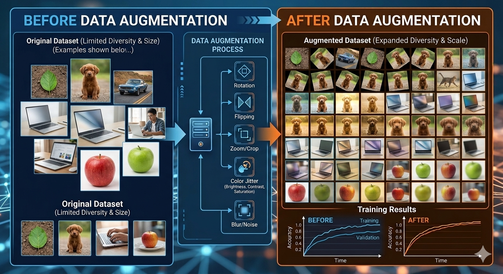

Automated Data Augmentation: A Beginner's Guide

>Introduction
In machine learning, data is everything. More data usually means better models. But what if you don't have enough data? What if you have 500 images but you need 50,000? This is where data augmentation comes in.
Data augmentation is the process of artificially creating new training data from existing data. Instead of just collecting more images, you modify the ones you have, rotate them, zoom in/out, flip them, change brightness, and use these variations to train your model.
Automated data augmentation goes further. Instead of manually deciding "rotate by 15 degrees" or "adjust brightness by 20%," the process automatically decides what transformations to apply and how much. This saves time and often discovers transformations humans wouldn't have thought of.
By the end of this guide, you'll understand what augmentation is, why it matters, how to do it manually, and how to use automated approaches.
Why Data Augmentation Matters
Imagine you're training a dog classifier with only 100 images. The model learns: "dogs have brown color, standing pose, sunny lighting." Then you test it on a dog photo that's gray, sitting down, in shadow. It fails.
Data augmentation solves this by showing the model dogs in many variations: different colors, poses, lighting, angles. The model learns the essence of "dog-ness" rather than specific visual patterns in your training data.
The dataset is illustrative — ten synthetic samples in two dimensions, because a decision boundary cannot be drawn in more. Everything else is measured. The classifier is 1-nearest-neighbour, and the accuracy beside it is scored on 1000 held-out samples it never saw during fitting. Augmentation is worth exactly as much as the invariance it encodes. Along arc slides a sample along the curve it was generated from — a real symmetry of this data — and pulls held-out accuracy from 79.9% up to roughly 90.7%. Switch it off and turn on Mirror: reflection is not a symmetry here, and the same number falls off a cliff. Jitter leaves the number where it started (79.2%), and Rotate stumbles into a smaller gain (84.2%) — real, but less than half of what the transform that actually matches the data buys you. More synthetic data is not the goal. More correct synthetic data is.
Manual Data Augmentation: Step by Step
Before diving into automation, let's understand the basic transformations. These are the building blocks that automated systems use.
1Rotation
What it does: Rotates the image by a random angle.
When to use: When objects can appear at different angles in real data.
# Example: Rotate image by 30 degrees
from PIL import Image
img = Image.open('dog.jpg')
rotated_img = img.rotate(30)
rotated_img.save('dog_rotated_30.jpg')In practice, you'd rotate by random angles (0-360 degrees) and keep versions that look realistic. A dog photo rotated 45 degrees is fine; rotated 180 degrees looks weird and might confuse the model.
2Flipping
What it does: Flips the image horizontally or vertically.
When to use: When the object can appear flipped in real data. For a dog, left-facing or right-facing are both valid.
# Horizontal flip
flipped_img = img.transpose(Image.FLIP_LEFT_RIGHT)
flipped_img.save('dog_flipped.jpg')Vertical flips are usually less useful unless your objects naturally appear upside down. A dog upside down is unusual, so vertical flips might add unrealistic data.
3Brightness and Contrast
What it does: Changes how bright or dark the image is.
When to use: When your deployment environment has varying lighting conditions.
from PIL import ImageEnhance enhancer = ImageEnhance.Brightness(img) bright_img = enhancer.enhance(1.5) # 50% brighter dark_img = enhancer.enhance(0.7) # 30% darker
Brightening by 1.5x means multiply all pixel values by 1.5. Dimming by 0.7x multiplies by 0.7. Typical ranges are 0.5x to 2.0x (half to double brightness).
4Cropping and Zooming
What it does: Takes a random section of the image (crop) or zooms into part of it.
When to use: When your model needs to recognize objects at different sizes or positions.
# Crop: Take the center 80% of the image width, height = img.size box = (width * 0.1, height * 0.1, width * 0.9, height * 0.9) cropped_img = img.crop(box)
A dog might fill 20% of an image (far away) or 90% of an image (close up). Cropping teaches your model to recognize dogs at various scales.
5Adding Noise
What it does: Adds random pixel value variations to simulate poor camera quality.
When to use: When you expect lower-quality images in production (phone cameras, security cameras, etc.).
import numpy as np img_array = np.array(img) noise = np.random.normal(0, 10, img_array.shape) noisy_img = np.clip(img_array + noise, 0, 255)
Gaussian noise (mean=0, std=10) adds realistic camera noise. Too much noise makes images unrecognizable; too little has no effect.
How to Apply Manual Augmentation
- Load your 100 original images
- For each image:
- Create rotated version (3-5 rotations per image)
- Create flipped version (horizontal flip)
- Create brightness variations (2-3 versions)
- Create cropped versions (2-3 crops)
- Now you have ~1000-1500 images instead of 100
- Train your model on this expanded dataset
This is tedious! For 100 images with 5 rotations, 3 brightness changes, and 2 crops each, you're creating 1000 images manually. This is why automation is valuable.
Automated Data Augmentation
Automated augmentation means the system decides what transformations to apply, rather than you deciding manually. There are two main approaches:
Approach 1: In-Memory Augmentation (During Training)
Instead of creating augmented images beforehand, augment them on-the-fly during training. Each epoch sees slightly different versions of the original images.
# Using popular library: Albumentations
import albumentations as A
from albumentations.pytorch import ToTensorV2
transform = A.Compose([
A.HorizontalFlip(p=0.5),
A.Rotate(limit=30, p=0.7),
A.RandomBrightnessContrast(p=0.2),
A.GaussNoise(p=0.1),
ToTensorV2(),
], bbox_params=A.BboxParams(format='albumentations'))
# During training:
for epoch in range(num_epochs):
for image, label in dataloader:
augmented = transform(image=image)
# Train on augmented imageBenefits: No disk space needed, infinitely many variations possible, computationally efficient.
Downside: Slightly slower training (augmentation adds computation per batch).
Approach 2: Smart Augmentation Policy (AutoAugment)
Instead of random augmentations, use a learned policy. AutoAugment uses reinforcement learning to discover which augmentations work best for your dataset.
# Simplified example of smart augmentation import torchvision.transforms as transforms # AutoAugment policy (pre-trained on ImageNet) from torchvision.transforms import AutoAugment, AutoAugmentPolicy augment = AutoAugment(policy=AutoAugmentPolicy.IMAGENET) # Apply to images augmented_images = [augment(img) for img in images]
How AutoAugment works:
- Try different augmentation policies
- Measure validation accuracy with each policy
- Keep the policies that improve accuracy the most
- Use the best policy for training
Approach 3: RandAugment (Simpler and Practical)
AutoAugment is powerful but complex. RandAugment is simpler: randomly pick augmentations and apply them with random intensity.
from timm.data import RandAugment
augment = RandAugment(
num_ops=2, # Apply 2 random ops per image
magnitude=9, # Intensity of operations (0-10)
)
# Apply to each image
augmented_images = [augment(img) for img in images]This is often as effective as AutoAugment but much faster to implement.
Step-by-Step: Implementing Data Augmentation
1Choose Your Library
For images: Albumentations (most popular), torchvision, imgaug, Augmentor
For general data: scikit-learn, pandas, custom Python code
# Install the library pip install albumentations
2Define Your Augmentation Pipeline
import albumentations as A
train_transform = A.Compose([
A.HorizontalFlip(p=0.5), # 50% chance
A.VerticalFlip(p=0.1), # 10% chance
A.Rotate(limit=45, p=0.7), # 70% chance, max 45°
A.RandomBrightnessContrast(p=0.2), # 20% chance
A.GaussNoise(p=0.1), # 10% chance
A.Resize(224, 224), # Resize to 224x224
])Each `p=0.X` is the probability of applying that transformation. `p=0.5` means 50% of images get flipped.
3Apply During Training
import torch
from torch.utils.data import DataLoader, Dataset
class CustomDataset(Dataset):
def __init__(self, images, labels, transform=None):
self.images = images
self.labels = labels
self.transform = transform
def __getitem__(self, idx):
image = self.images[idx]
label = self.labels[idx]
if self.transform:
augmented = self.transform(image=image)
image = augmented['image']
return image, label
# Create dataset with augmentation
train_dataset = CustomDataset(
images=train_images,
labels=train_labels,
transform=train_transform
)
train_loader = DataLoader(
train_dataset,
batch_size=32,
shuffle=True
)
# Training loop
model.train()
for images, labels in train_loader:
# Each image in this batch is independently augmented
predictions = model(images)
loss = criterion(predictions, labels)
optimizer.zero_grad()
loss.backward()
optimizer.step()4Use Different Augmentations for Train vs. Test
Critical point: Only augment training data, never test data.
# For training: aggressive augmentation
train_transform = A.Compose([
A.HorizontalFlip(p=0.5),
A.Rotate(limit=45, p=0.7),
A.RandomBrightnessContrast(p=0.3),
])
# For testing: only resize, no augmentation
test_transform = A.Compose([
A.Resize(224, 224),
])Why? Augmentation teaches the model to generalize. At test time, you want to evaluate on real, unmodified images to know how it will perform in production.
Common Augmentations and When to Use Them
| Augmentation | Good For | Avoid When | Typical Range |
|---|---|---|---|
| Rotation | Objects at different angles | Text (rotated text looks wrong) | ±15 to ±45° |
| Flip (H/V) | Objects from different sides | Text, directional objects | 50% horizontal, 10% vertical |
| Brightness | Different lighting conditions | Very extreme (hard to recognize) | 0.7x to 1.3x |
| Crop/Zoom | Objects at different distances | Small objects (risk losing them) | 80-100% of image |
| Noise | Low-quality images | High-quality data (degrades it) | σ=5 to 15 |
| Color shift | Different camera white balance | When color matters (e.g., tumor color) | ±20% per channel |
Real-World Example: Dog Classifier
import albumentations as A
from albumentations.pytorch import ToTensorV2
import torch
from torch.utils.data import DataLoader, Dataset
from torchvision import models
import torch.nn as nn
# Step 1: Define augmentation
train_aug = A.Compose([
A.HorizontalFlip(p=0.5), # Dogs face left/right
A.Rotate(limit=20, p=0.5), # Head tilts
A.RandomBrightnessContrast(p=0.3), # Different lighting
A.Resize(224, 224),
ToTensorV2(),
])
test_aug = A.Compose([
A.Resize(224, 224),
ToTensorV2(),
])
# Step 2: Create dataset
class DogDataset(Dataset):
def __init__(self, images, labels, transform):
self.images = images
self.labels = labels
self.transform = transform
def __getitem__(self, idx):
img = self.images[idx]
if self.transform:
img = self.transform(image=img)['image']
return img, self.labels[idx]
# Step 3: Create dataloaders
train_dataset = DogDataset(train_images, train_labels, train_aug)
test_dataset = DogDataset(test_images, test_labels, test_aug)
train_loader = DataLoader(train_dataset, batch_size=32, shuffle=True)
test_loader = DataLoader(test_dataset, batch_size=32)
# Step 4: Train
model = models.resnet50(pretrained=True)
model.fc = nn.Linear(2048, 10) # 10 dog breeds
criterion = nn.CrossEntropyLoss()
optimizer = torch.optim.Adam(model.parameters())
for epoch in range(10):
for images, labels in train_loader:
predictions = model(images)
loss = criterion(predictions, labels)
optimizer.zero_grad()
loss.backward()
optimizer.step()
# Your 200 images become effectively 1000+ variations through augmentation!Key Takeaways for Beginners
Data augmentation creates new training examples by modifying existing ones. This makes models more robust and helps when you have limited data.
Common augmentations are simple: flip, rotate, brightness changes, crops, and noise.
Automate, don't manually create images. Use libraries like Albumentations to apply augmentations during training.
Only augment training data, never test data. You want to evaluate on real, unmodified images.
Start simple. Horizontal flips + rotation covers 80% of use cases. Add more augmentations if accuracy plateaus.
Tune probabilities. `p=0.5` means 50% of images get that augmentation. Start with 0.5 for standard operations.
Conclusion
Data augmentation is one of the most practical techniques in machine learning. When you're starting out, remember: collect as much diverse real data as possible, then use augmentation to expand it further. Augmentation is a multiplier, not a replacement for good data collection.
The examples in this guide work for image data, but augmentation applies to other domains too: text (synonym replacement, word reordering), audio (pitch shifts, speed changes), and numerical data (adding noise, transformations).
Your next step: try Albumentations with your own dataset. Start with 3-4 augmentations, monitor your validation accuracy, and adjust from there. You'll quickly build intuition for what works.